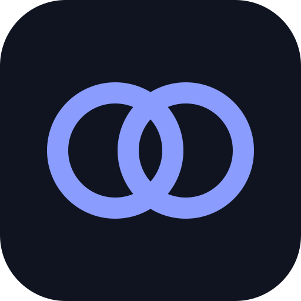

מה חדש

KesherAIהתחבר ל-KesherAI שרץ במחשב שלך. כל העבודה רצה במחשב; הטלפון רק שולח ומציג.
המחשבים שלך
המחשבים שלך נמצאים לבד: אלה שמחוברים לאותו חשבון Google ושבהם מסומן ב-KesherAI „לאפשר למכשירים האחרים שלי להשתמש במחשב הזה”.
- במחשב: הגדרות ← טלפון. העתק את קישור החיבור.
- הדבק אותו כאן. הוא נשמר, ובפעם הבאה האפליקציה תתחבר מעצמה.